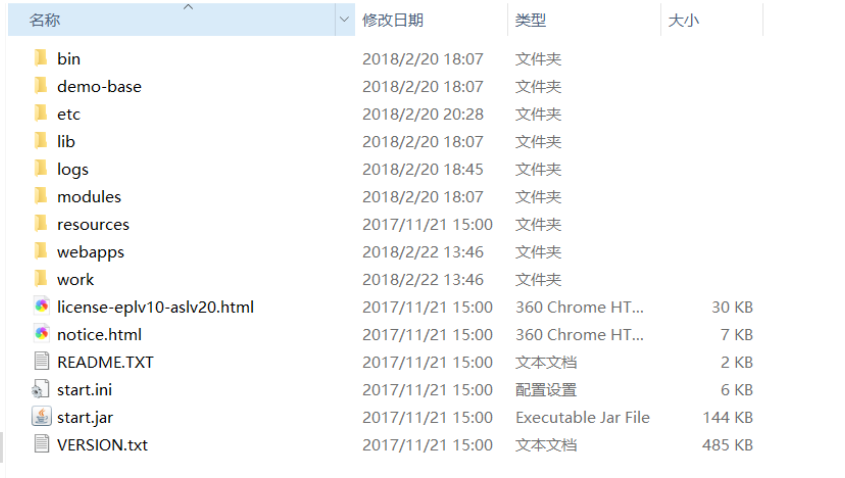
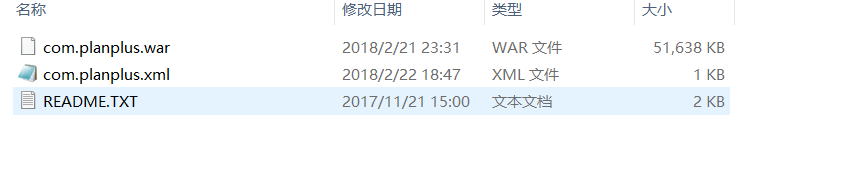
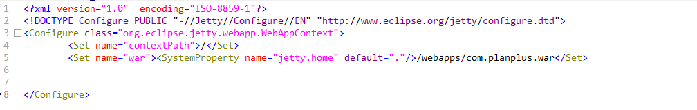

jetty是一款和tomcat类似的web服务器。
jetty介绍
Jetty比较简单，和Tomcat大致相同，本文主要描述jetty9以上版本的使用，jetty9版本对jetty的目录结构和使用都有了一些明显的改动。
Jetty较于Tomcat属于轻量级，而且在处理高并发细粒度请求的场景下显得更快速高效。所以使其也拥有众多使用场景，合适的选择应该为：云平台本身的门户网站放在Tomcat内，而云台托管的Java Web应该是部署在Jetty内的。
jetty目录结构

bin目录是存放在Unix系统下运行的shell脚本的；
etc存放的都是jetty的配置文件；
modules是存放着各个模块的，以.mod结尾，点进去可以看到有众多模块，不过大多数是没有激活的，像logs，webapps这种模块就是默认激活的。
webapps和Tomcat一样，用于存放项目的；
可以看到截图中是有个work目录的，正常情况下，解压jetty是没有这个目录的，因为当在webapps中存放项目时，通过在根目录下面运行java -jar start.jar命令，启动jetty，由于jetty本身所在的目录和运行的项目的路径是分开的，这方便于丹jetty升级的时候，并不影响运行的项目，所以例如在webapps下放置一个war包，运行jetty，该war包解压出来的项目是存在于系统的temp的目录下面的，在jetty的目录中并不能找到，不过当创建一个work文件夹的时候，解压出来的项目就会默认的存放在work文件夹内了。
jetty操作及注意事项
Jetty默认的端口为8080，修改端口号也很简单，首先进入到jetty服务器安装目录下会看到start.ini配置文件，这里就是jetty启动时加载的配置，其中包括要加载的模块，超时时间配置还有这里的端口号等。例如：jetty.http.port=8888。
当部署项目的时候，出来将项目copy到webapps下面之外，还需要创建一个对应的xml的文件，如下图：

里面的配置文件编写为：

这是最基础的配置，同tomcat的server.xml类似，不过jetty可以配置更多。
默认情况下，jetty会对根目录(也可以配置jetty.base)下webapps/目录下的内容实现自动部署，部署的规则如下：
隐藏文件(.开头)和.d结尾的目录被忽略；
CVS目录如”CVS”和”CVSROOT”被忽略；
任何war包都会被自动部署；
任何xml描述文件被认为是可部署的；
任何目录都被认为是可部署的；
同名的war包和目录同时存在，目录不被部署，仅war包部署，且认为war包引用该目录；
同名的war包和xml文件同时存在，war包不被部署，仅xml文件描述符被部署，且认为该xml文件引用该war包；
同名的目录和xml文件同时存在，目录不被部署，xml文件被部署，且认为xml文件引用该目录；
关于更详细的说明，请参考官方文档的这里。我主要提醒的是：在webapps目录中，如果存在同名的目录、war包和xml文件，它们会被当做同一个工程，部署的优先级是xml文件>war包>目录。一定要注意同名，如果不同名，在webapps下存在一个war包，同时存在一个引用该war包的xml文件，则会导致重复部署，这就是我跳的坑。
部署时，推荐的做法是，将xml描述文件放到自动部署的webapps目录下，里面定义war包的路径、上下文路径、是否解压、临时目录、日志文件等，然后将war包放在自定义的固定目录下，项目更新，只需要备份和替换war包，重启jetty即可。